Exercises 1: Automation#
🚧This part of training platform is under ⚠️construction⚠️ and may not be shared or published! 🚧
Characteristics of the exercise#
Type of trainings exercise:
This exercise can be used in online and presence training.
It can be done as a follow-along exercise or individually as a self-study.
Estimated time demand for the exercise
Relevant Wiki Articles
Aim of the exercise: Aina, the GIS expert at the Malagasy Red Cross (CRM), is preparing for the upcoming cyclone season. She wants to improve her team’s ability to act quickly once a storm is forecasted by automating key analyses in QGIS. These include estimating exposed populations, identifying impacted services like health and education, and assessing whether health posts can be reached from key warehouses within a critical 10-hour window. The goal is to prepare an end-to-end analysis and visualization workflow that can support fast, data-driven anticipatory action before a cyclone makes landfall.
Instructions for the trainers#
Trainers Corner
Prepare the training
Take the time to familiarise yourself with the exercise and the provided material.
Prepare a white-board. It can be either a physical whiteboard, a flip-chart, or a digital whiteboard (e.g. Miro board) where the participants can add their findings and questions.
Before starting the exercise, make sure everybody has installed QGIS and has downloaded and unzipped the data folder.
Check out How to do trainings? for some general tips on training conduction
Conduct the training
Introduction:
Introduce the idea and aim of the exercise.
Provide the download link and make sure everybody has unzipped the folder before beginning the tasks.
Follow-along:
Show and explain each step yourself at least twice and slow enough so everybody can see what you are doing, and follow along in their own QGIS-project.
Make sure that everybody is following along and doing the steps themselves by periodically asking if anybody needs help or if everybody is still following.
Be open and patient to every question or problem that might come up. Your participants are essentially multitasking by paying attention to your instructions and orienting themselves in their own QGIS-project.
Wrap up:
Leave time for any issues or questions concerning the tasks at the end of the exercise.
Leave some time for open questions.
Available Data#
Download all datasets here, save the folder on your computer and unzip the file.
The folder is called “ and contains the whole standard folder structure with all data in the input folder and the additional documentation in the documentation folder.
Dataset |
Source |
Descriptions |
|---|---|---|
Administrative Boundaries |
The administrative boundaries on level 0-4 for Madagascar can be accessed via HDX provided by OCHA. For this trigger mechanism we provide the administrative boundaries on level 1 (regional level) and 2 (district level) as a shapefile. |
|
Cyclone Tracks |
International Best Track Archive for Climate Stewardship (IBTrACS) |
IBTrACS project is the most complete global collection of tropical cyclones available. It merges recent and historical tropical cyclone data from multiple agencies to create a unified, publicly available, best-track dataset that improves inter-agency comparisons. |
education facilities and health sites |
The POI data (education facilities and health sites) is downloaded using the HOT Export Tool based on OpenStreetMap data. |
|
Population |
The worldpop dataset in raster format provides the estimated total number of people per grid-cell for the year 2020. We will be working with the Constrained Individual countries 2020 dataset at a resolution of 100m. |
Context
Aina is the GIS expert at the Croix-Rouge Malagasy (CRM). With the cyclone season approaching, she knows that time is of the essence once a storm is forecasted. Every hour counts when it comes to protecting communities at risk.
This year, Aina wants to be one step ahead. Instead of manually analyzing cyclone data under pressure, she decides to prepare an automated QGIS model that will help her respond quickly and efficiently.
Her goal:
Build a workflow that automatically estimates exposed populations and infrastructure at risk.

Task 1: Estimating Exposed Population – Aina’s Manual Approach#
Before developing the automated model, Aina used to estimate the exposed population manually whenever a cyclone approached Madagascar. In this task, you will follow the steps she used in the past by working with the historical track of Cyclone Harald, WorldPop raster data, and administrative boundaries.
You will manually buffer the cyclone track, clip the population raster, and calculate exposed population using zonal statistics.
Open QGIS and create a new project by clicking on
Project->NewSave the project in the “project” folder. To do that click on
Project->Save asand navigate to the folder. Name the project “Cyclon_Harald_Exposure”.Load the GeoJOSN file “example_Harald_2025_Track.geojson” in your project by drag and drop (Wiki Video) . Open the folder
data->inputReproject the cyclone track to use meters instead of degrees (important for accurate buffering):
In the Processing Toolbox, search for
Reproject Layer.Input:
example_Harald_2025_TrackTarget CRS:
EPSG:29738or another meter-based CRS appropriate for Madagascar.Save the result in the
tempfolder as:Harald_Track_Reprojected
{kind=link}
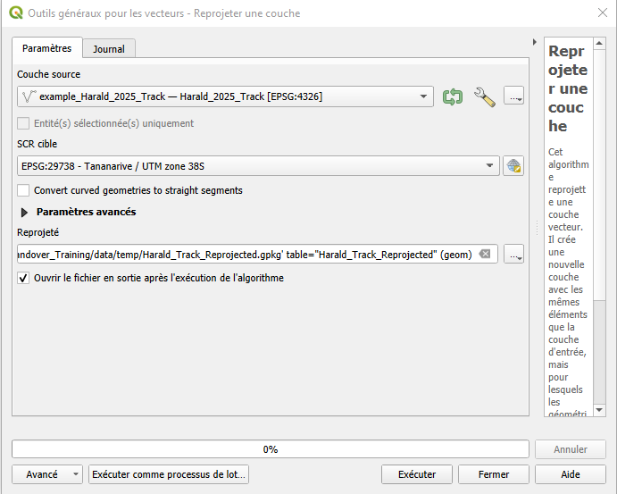
Reprojetter la trajectoire du cyclone#
Attention
Buffer distances must be calculated in meters. Many datasets (like GeoJSON cyclone tracks) use geographic coordinate systems like EPSG:4326, which measure in degrees — not meters. To correctly calculate a 200 km buffer, we must first reproject the track into a projected CRS that uses meters.
Buffer the cyclone track:
In the Processing Toolbox, search for
Buffer.Input:
Harald_Track_ReprojectedBuffer distance:
200000(meters)Segments: Leave default (5)
Dissolve:
YesSave output in the
tempfolder as:Harald_Buffer_200km

Tamponner la trajectoire du cyclone#
Intermediate Result: Buffer
{kind=link}
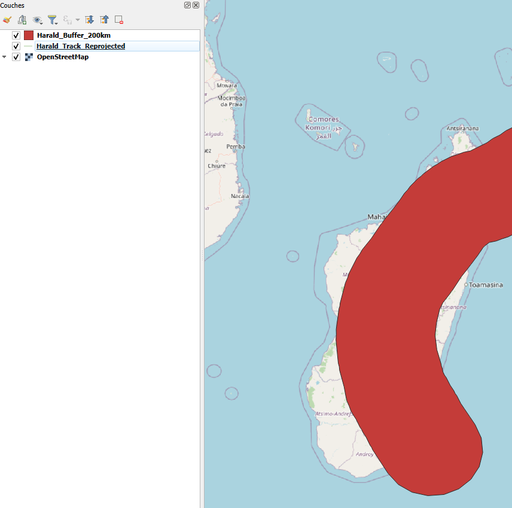
Les résultats intermédiaires doivent montrer la trajectoire du cyclone et la zone tampon de 200 kilomètres autour de celui-ci. La zone tampon doit être une seule entité.#
Reproject the buffer back to EPSG:4326 (to match the raster’s CRS):
In the Processing Toolbox, search for Reproject Layer.
Input: Harald_Buffer_200km_29738
Target CRS: EPSG:4326 – WGS 84
Save the output in the temp folder as: Harald_Buffer_200km_4326
{kind=link}
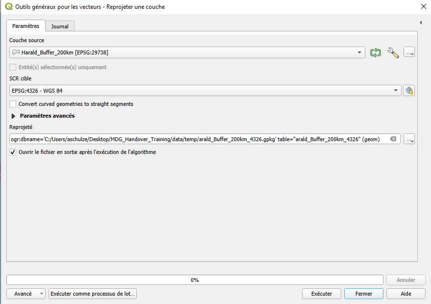
Reprojetter la tamponner trajectoire du cyclone#
Load the administrative boundaries:
File:
mdg_admbnda_adm2_BNGRC_OCHA_20181031.gpkgAdd using drag and drop or
Add Vector Layer.
Load the population raster:
File:
MDG_WorldPop_2020_constrained.tifAdd using
Layer→Add Raster Layer.
Clip the population raster using the buffered impact zone:
In the Processing Toolbox, search for
Clip Raster by Mask Layer.Input raster:
MDG_WorldPop_2020_constrainedMask layer:
Harald_Buffer_200kmSave output in the
tempfolder as:Harald_Pop_Clip

Découpez la population ratser selon la zone affectée par le cyclone (trajectoire tampon du cyclone)#
Intermediate Result: Clip Population Raster Alyer

Résultat intermédiaire du découpage de la couche raster de population à l’étendue de la trajectoire tamponnée du cyclone.#
Calculate total exposed population:
In the Processing Toolbox, search for
Zonal Statistics.Input vector layer:
mdg_admbnda_adm2_BNGRC_OCHA_20181031.gpkgRaster layer:
Harald_Pop_ClipStatistic to calculate:
SumField prefix: e.g.,
exposed_population_Save the updated vector layer in the
resultfolder as:Harald_Exposed_PopulationgThe result will be a new column in the attribute table of the
mdg_admbnda_adm2_BNGRC_OCHA_201810312.gpkglayer, showing the total population within the cyclone buffer per district.

Calcul de la population exposée aux cyclones par district sur la base du raster de population.#
Visualise the affected population by classifying the results: Now that Aina has estimated the exposed population in each district, she wants to clearly show the differences across regions on the map. To do this, we’ll apply a graduated classification to the
Harald_Exposed_Populationlayer using the new population field created by the Zonal Statistics tool.
In the Layers panel, right-click on the layer
Harald_Exposed_Populationand chooseProperties.Go to the Symbology tab on the left.
At the top of the window, change the style from
Single SymboltoGraduated.In the Value drop-down menu, select the field that contains the population sum. It typically starts with the prefix you defined earlier, e.g.
exposed_population_sum.Set the color ramp to one that suits your map (e.g.
Reds).Choose a classification mode (e.g.
Quantile,Natural Breaks, orEqual Interval) and select the number of classes (e.g. 5).Click
Classifyto generate the classification.Click
Applyand thenOKto display the classified map.
Tip
You can adjust class boundaries or labels by double-clicking on each class entry.
{kind=link}
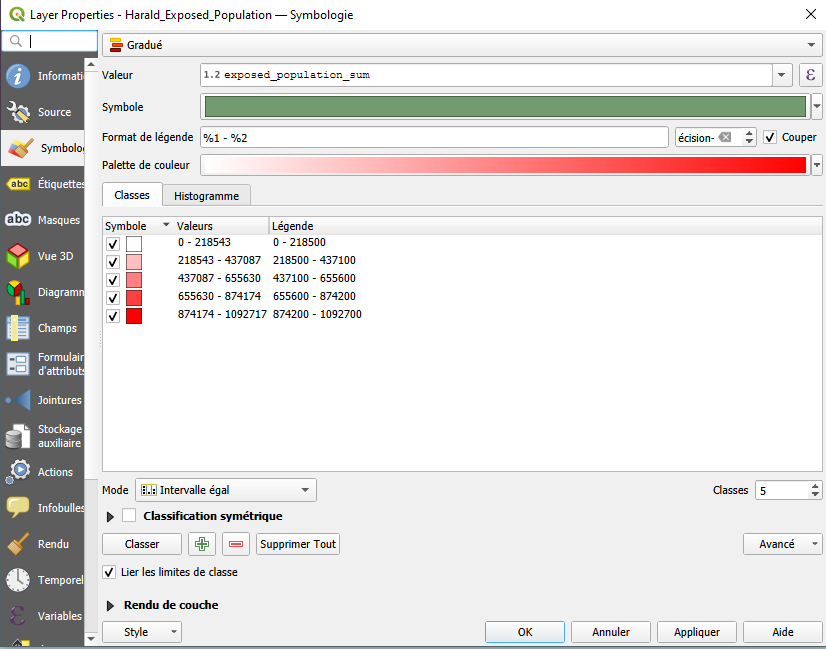
Configuration of the visualisation of the exposed population in five classes.#
Your results should look something like this:

Visualisation de la population exposée en cinq classes.#
Task 2: Automation of Exposed Population Estimation – Aina’s Model#
After manually estimating exposed populations in past cyclone seasons, Aina has decided to prepare an automated model using the QGIS Graphical Modeller. This will help her move faster and avoid repeating the same steps manually each time a cyclone is forecasted.
In this task, you will help Aina build a simple version of that model using the tools from Task 1. The model should:
Reproject the cyclone track to EPSG:29738
Buffer the cyclone track
Reproject the buffer back to EPSG:4326
Clip the population raster
Run Zonal Statistics to get exposed population per district
Set up the model structure:
Open the Graphical Modeler from the top menu:
Processing→Graphical Modeler…
Naming the model:
A new model window will open. On the left side, click on
Model Propertiesto define basic information about the model:Model Name:
Estimate_Exposed_PopulationGroup:
Cyclone Trigger ToolsLeave the description empty or write: “Automated model to estimate exposed population based on cyclone buffer.”
Save the model
To save the model:
Click the Save icon (💾) or go to
Model→Save.Navigate to the
modelsfolder of your training structure.Save the model as:
Estimate_Exposed_Population
Add model inputs:
On the left panel, expand the Inputs section.
Add the following input layers with type constraints:
+ Vector LayerLabel:
Cyclone TrackIn the Advanced panel, set geometry type to
Line
+ Raster LayerLabel:
Population Raster
+ Vector LayerLabel:
Admin BoundariesIn the Advanced panel, set geometry type to
Polygon
These will appear at the top of your model canvas and serve as the input data when the model is run.
Tip
All inputs should be set as mandatory, so the model always receives the necessary data to run correctly.
{kind=link}
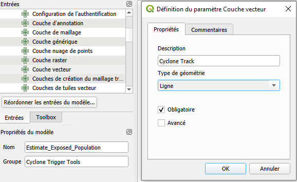
Definition of the model input: Cyclon Track#
{kind=link}
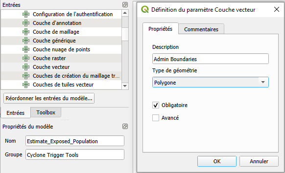
Definition of the model input: Admin Bounderies#

Definition of the model input: Population Raster#
Intermediate Result
{kind=link}
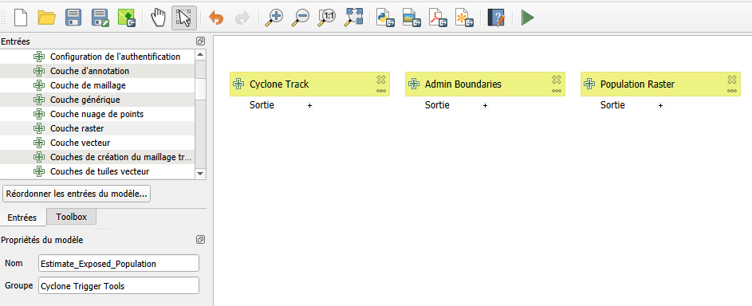
Résultat intermédiaire de la définition des données d’entrée du modèle#
Reproject the cyclone track to EPSG:29738
From the Algorithms panel, search for Reproject Layer .
In the configuration window:
Add a description:
Reprojecter la couche de trajectoire du cyclone a EPSG : 29738Set Input layer to
Cyclone Track(from Model Input).Set Target CRS to
EPSG:29738 – Madagascar / Laborde Grid.Set the output to Model Output (leave the output name empty).
Click OK to add the step to the model.

Reprojecter la couche de trajectoire du cyclone vers un système de référence de coordonnées métrique (CRS) EPSG : 29738#
Buffer the reprojected cyclone track
From the Algorithms panel, search for Buffer.
In the configuration window:
Add a description:
Mettre en mémoire tampon la couche Cyclone reprojetéeAdd a description:
Set Input layer to the output from the previous step (from Algorithm Output).
Set Distance to
200000(200 km).Leave Segments at the default value (
5).Set Dissolve result to
Yes.Set the output to Model Output (leave the output name empty).
Click OK to add the step to the model.

Mettre en mémoire tampon la couche Cyclone reprojetée#
Reproject the buffer back to EPSG:4326
From the Algorithms panel, search for Reproject Layer.
In the configuration window:
Add a description:
Reprojecter le tampon vers EPSG:4326In the configuration window:
Set Input layer to the output from the previous step (from Algorithm Output).
Set Target CRS to
EPSG:4326 – WGS 84.Set the output to Model Output (leave the output name empty).
Click OK to add the step to the model.
{kind=link}
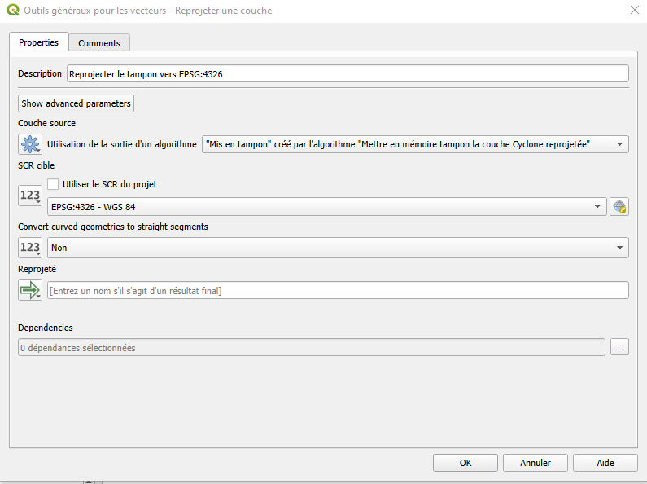
Reprojecter le tampon vers EPSG:4326#
Clip the population raster using the buffered area
From the Algorithms panel, search for Clip Raster by Mask Layer .
In the configuration window:
Add a description:
Découper la couche raster de population pour l'étendre au tampon Cyclon
In the configuration window:
Set Input layer to
Population Raster(from Model Input).Set Mask layer to the output from the previous step (from Algorithm Output).
Set the output to Model Output (leave the output name empty).
Click OK to add the step to the model.
{kind=link}
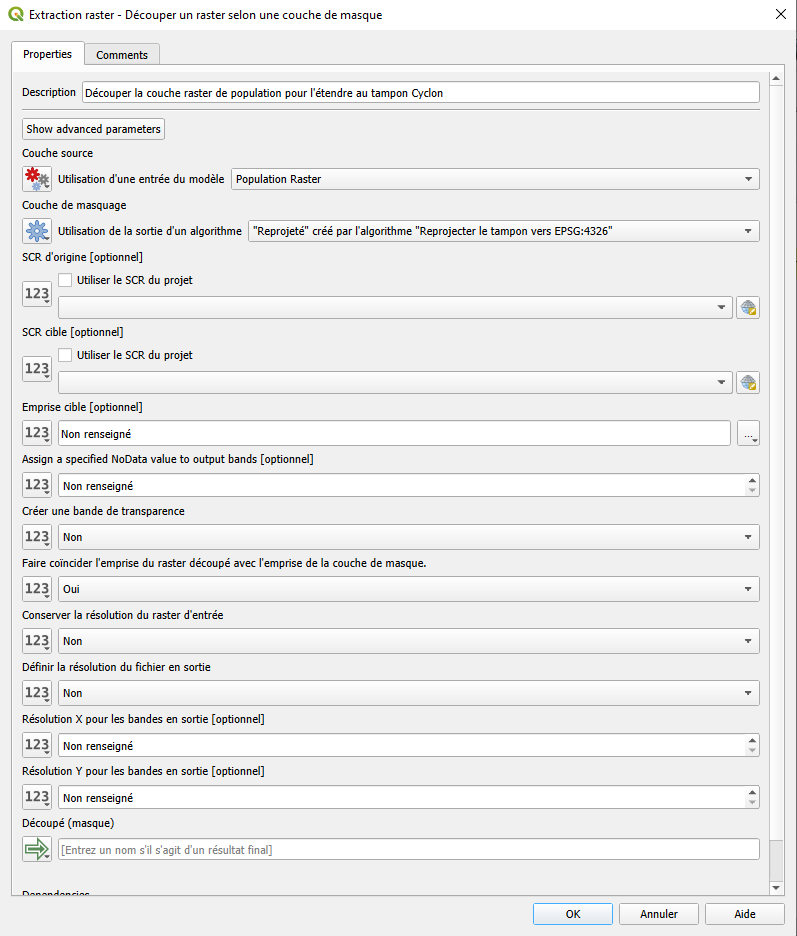
Découper la couche raster de population pour l’étendre au tampon Cyclon#
Calculate zonal statistics to estimate exposed population
From the Algorithms panel, search for Zonal Statistics .
In the configuration window: Calcul de la population exposée aux cyclones par district
Add a description:
Calcul de la population exposée aux cyclones par districtSet Input layer to
Admin Boundaries(from Model Input).Set Raster layer to the output of the previous step (from Algorithm Output).
Set Output column prefix to
exposed_population_.Under Statistics to calculate, select
Sum.Set the output to Model Output and name it:
exposed_population_sumClick OK to add the step to the model.
{kind=link}
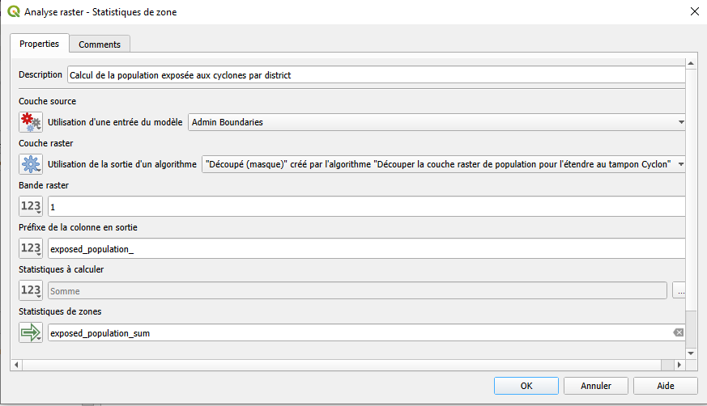
Calcul de la population exposée aux cyclones par district#
Your results should look something like this:
{kind=link}
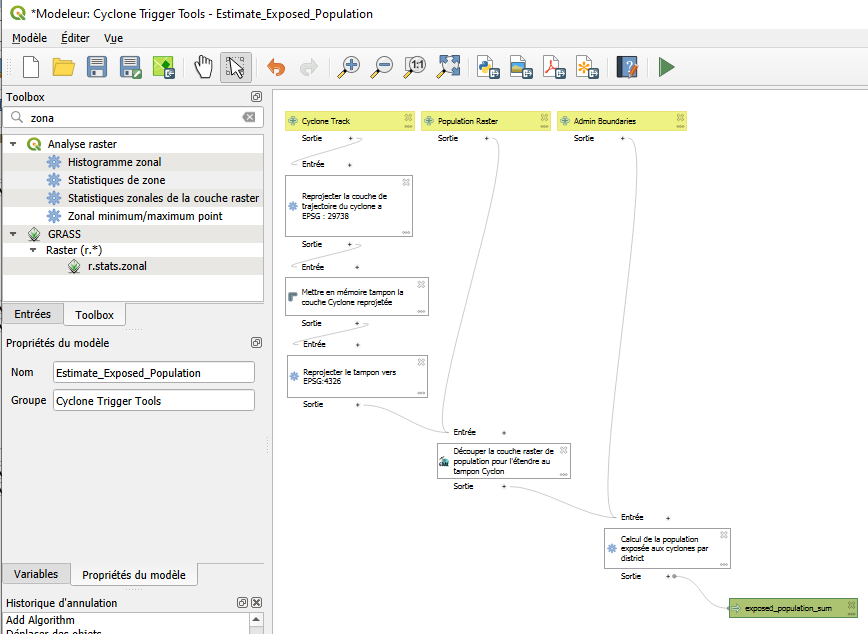
Votre modèle devrait ressembler à ceci. Tous les algorithmes sont correctement connectés et la sortie du modèle est définie.#
Validate your model (recommended)
Before saving or running, click the ✔️ Validate Model button in the top toolbar.
Fix any warnings or errors shown in the log panel.
This helps ensure your model is complete and won’t break during execution.
Run the model
Run the model by clicking on
Model->Run ModelSet Admin Bounderies to
mdg_admbnda_adm2_BNGRC_OCHA_20181031.gpkgSet Cyclone Track to
example_Harald_2025_TrackSet Population Raster to
MDG_WorldPop_2020_constrained.tifSet the model output exposed_population_sum to
Harald_Exposed_Populationand save it in thedata->output
You can now run this model any time a new cyclone track becomes available.

Pour exécuter le modèle, spécifiez l’entrée comme indiqué dans l’image et définissez le nom de la couche de sortie.#
Your results should look something like this:
{kind=link}
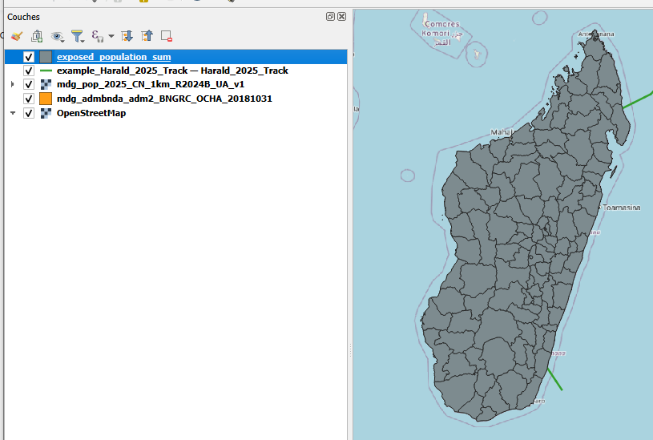
Add the cyclone buffer as an additional model output
Double-click on the algorithm from step 7 (Reproject the buffer back to EPSG:4326) to open its configuration.
In the Output layer field, check the box for Model Output.
Give the output a clear name, for example:
cyclone_harald_bufferClick OK to save the change.
This will allow the model to produce both the exposed population results and the buffered cyclone impact zone when it is run.
{kind=link}
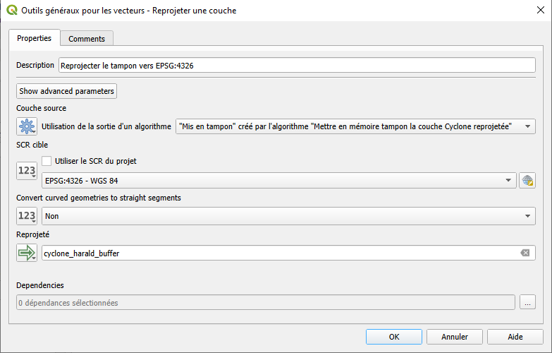
Run the model again
Run the model by clicking on
Model->Run ModelSet Admin Bounderies to
mdg_admbnda_adm2_BNGRC_OCHA_20181031.gpkgSet Cyclone Track to
example_Harald_2025_TrackSet Population Raster to
MDG_WorldPop_2020_constrained.tifSet the model output cyclone_harald_buffer to
cyclone_harald_bufferand save it in thedata->outputSet the model output exposed_population_sum to
Harald_Exposed_Populationand save it in thedata->output
{kind=link}
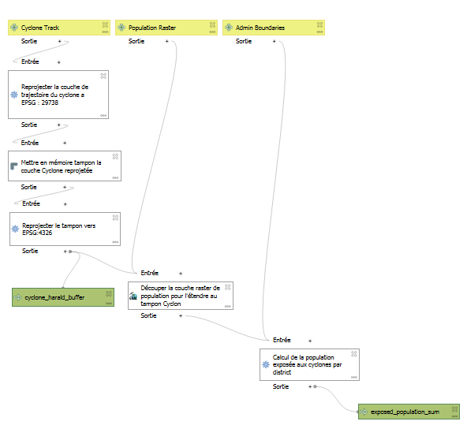
Definition of the model input: Admin Bounderies

Definition of the model input: Population Raster#
{kind=link}
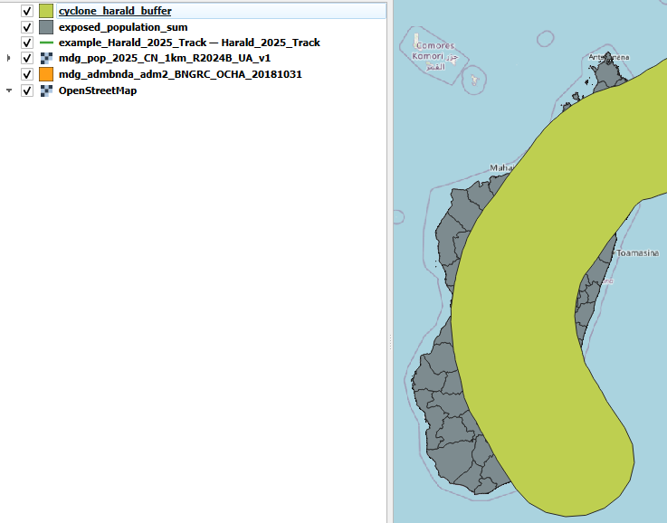
Definition of the model input: Population Raster#
Task 3: Identifying Affected Health Facilities and Schools – Aina Adds More Layers#
After building her model to estimate exposed population, Aina wants to expand its usefulness. She decides to also identify critical services affected by cyclones — especially health facilities and schools.
Not only does she want to know which facilities are affected, but also how many in total exist per district. That way, she can calculate the percentage of services affected in each area.
To achieve this, she will use two point datasets from OpenStreetMap:
Load the health and education facilities datasets First, let’s have a look at the data we want to work with.
Navigate to your
inputdata folder.Drag and drop the following layers into your QGIS project:
hotosm_mdg_health_facilitieshotosm_mdg_education_facilities
Confirm that both layers are visible in the Layers Panel
Save your model under a new name
Open your existing model
Estimate_Exposed_Population.model3.Immediately save it under a new name:
Click
Model→Save As…Save it to the
projectfolder as:
Estimate_Exposed_Population_Health_Education
Add new model inputs
In the Inputs section, add:
Vector LayerDescription:
Health Facilities
Set Geometry Type to
Point
Vector LayerDescription:
Education Facilities
Set Geometry Type to
Point
{kind=link}
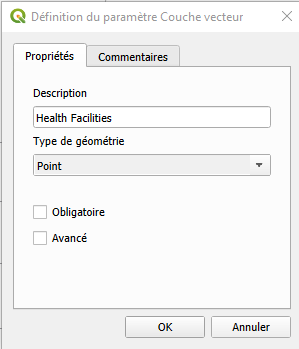
Définir une nouvelle entrée de modèle : couche vectorielle de points représentant les établissements de santé#
{kind=link}
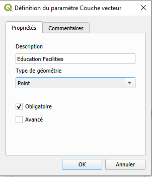
Définir une nouvelle entrée de modèle : couche vectorielle de points représentant les établissements d’enseignement#
Count All Health Facilities per Admin 2
From the Algorithms panel, search for Count Points in Polygon.
Configuration:
Add a description:
Comptez le nombre d'établissements de santé dans chaque district.Polygon layer:
Admin Boundaries(Model Input)Points layer:
Health Facilities(Model Input)Count field name:
Count_health_totalLeave output as Model Output
{kind=link}
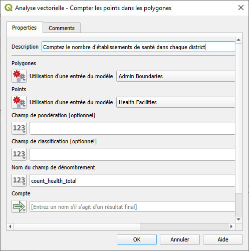
Configuration de l’opération : compter le nombre d’établissements de santé dans chaque district.#
Count All Education Facilities per Admin 2
Add another Count Points in Polygon step.
Configuration:
Add a description:
Comptez le nombre d'établissements de education dans chaque districtPolygon layer:
Admin Boundaries(Model Input)Points layer:
Education Facilities(Model Input)Count field name:
count_education_totalLeave output as Model Output

Configuration de l’opération : compter le nombre d’établissements scolaires dans chaque district.#
Intersect Health Facilities with Cyclone Buffer
From the Algorithms panel, search for Intersection.
In the configuration window:
Add a description:
Établissements de santé dans la zone d'impact du cyclone
Input layer:
Health Facilities(Model Input)Overlay layer: buffered cyclone zone (use “Reprojected to EPSG:4326” from Algorithm Output)
Leave output as Model Output
Click OK

Configuration de l’opération : intersecter les établissements de santé avec la zone d’impact du cyclone.#
Intersect Education Facilities with Cyclone Buffer
Add another Intersection algorithm.
Configuration:
Add a description:
Établissements de education dans la zone d'impact du cyclone.
Input layer:
Education Facilities(Model Input)Overlay layer: buffered cyclone zone (use “Reprojected to EPSG:4326” from Algorithm Output)
Leave output as Model Output
Click OK

Configuration de l’opération : intersecter les établissements de education avec la zone d’impact du cyclone.#
Count Affected Health Facilities per Admin 2
Add Count Points in Polygon
Add a description:
Compter les établissements de santé touchés par districtConfiguration:
Add a description: Compter les établissements de santé touchés par district
Compter les établissements de santé touchés par district
Polygon layer: Count total health facilities output
Points layer: intersected health facilities output
Count field name:
sum_exposed_health

Configuration de l’opération : compter les établissements de santé touchés par district.#
Count Affected Education Facilities per Admin 2
Add Count Points in Polygon
Add a description:
Compter les établissements education touchés par districtConfiguration:
Add a description:
Compter les établissements education touchés par district
Polygon layer: Count total education facilities output
Points layer: intersected education facilities output
Count field name:
sum_exposed_education

Configuration de l’opération : compter les établissements de santé touchés par district.#
Calculate percentage of affected Health Facilities To compute the percentage of affected health sites per administrative area, we will use the Field Calculator:
Add the Field Calculator:
Add a description:
Calculer le pourcentage d’établissements de santé touchés par districtConfiguration:
Add a description:
Calculer le pourcentage d’établissements de santé touchés par district
Input layer: the output of Count Affected Health Facilities per Admin 2
Output field name:
pct_exposed_healthField type: Decimal (real)
Expression:
CASE WHEN "count_health_total" > 0 THEN "sum_exposed_health" / "count_health_total" * 100 ELSE 0 END
Set the output as Model Output
Name it:
admin2_health_affected
{kind=link}
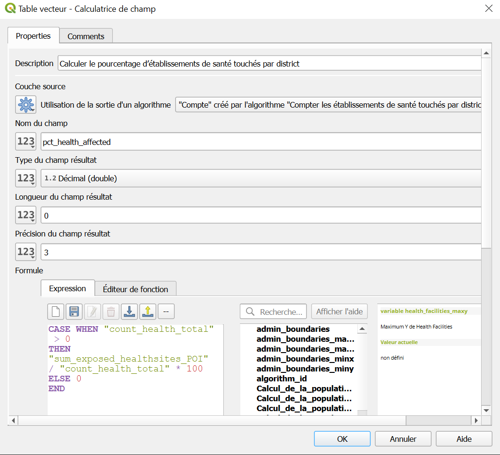
Configuration de l’opération : calculer le pourcentage d’établissements de santé touchés par district.#
Calculate percentage of affected Education Facilities To compute the percentage of affected education sites per administrative area, we will use the Field Calculator:
Add the Field Calculator:
Add a description:
Calculer le pourcentage d’établissements d’éducation touchés par districtConfiguration:
Add a description:
Calculer le pourcentage d’établissements d’éducation touchés par district
Input layer: the output of Count Affected Education Facilities per Admin 2
Output field name:
pct_exposed_educationField type: Decimal (real)
Expression:
CASE WHEN "count_education_total" > 0 THEN "sum_exposed_education_POI" / "count_education_total" * 100 ELSE 0 END
Set the output as Model Output
Name it:
admin2_education_affected

Configuration de l’opération : calculer le pourcentage d’établissements d’éducation touchés par district.#
Validate and Save Your Extended Model
Click the ✔️ Validate Model button to check for errors.
Save again to:
Estimate_Exposed_Population_Health_Education.model3
Run the model
Click the ▶️ Run button in the top-right corner of the Graphical Modeler window.
Input:
Click on the three dots for each input dataset and select the correct input:
Cyclone Track→ select the GeoJSON of the storm path (e.g.Harald_2025_Track.geojson)Population Raster→ select the WorldPop raster fileAdmin Boundaries→ select the Admin 2 layer (e.g.MDG_adm2.gpkg)Health Facilities→ select the point dataset for health sitesEducation Facilities→ select the point dataset for schools
Output:
Save all output layers in the output folder and use the names below.
admin2_health_affacted->
admin2_health_affectedadmin2_education_affected->
admin2_education_affectedcyclone_harald_buffer->
cyclone_harald_bufferexposed_population_sum->
admin2_harald_Exposed_Population
Click Run to execute the full model.
{kind=link}
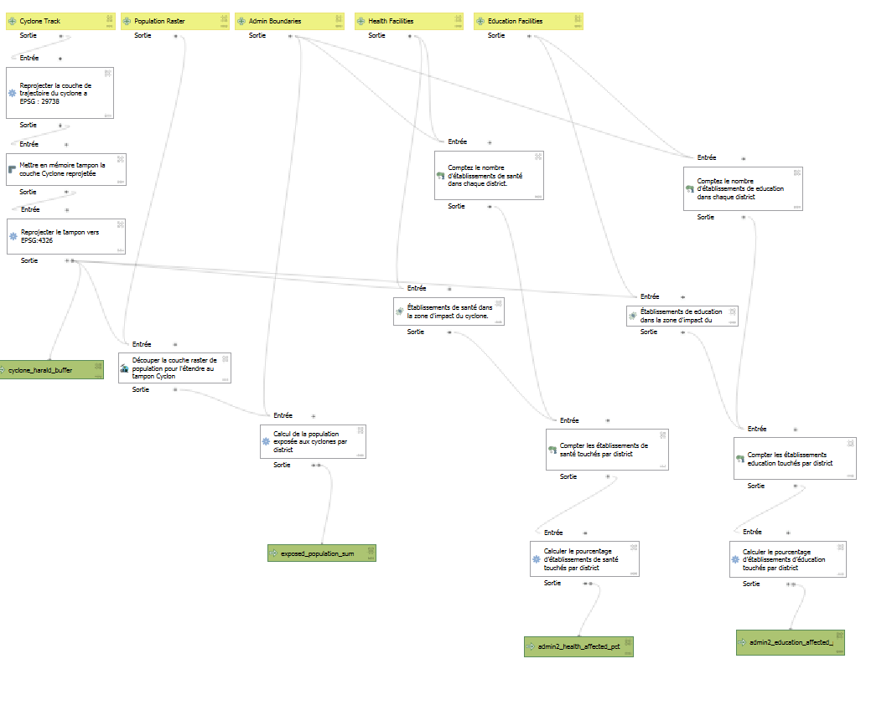
Vue d’ensemble du Modèle Graphique de la tâche 3 montrant tous les algorithmes connectés et les sorties définies.#
{kind=link}
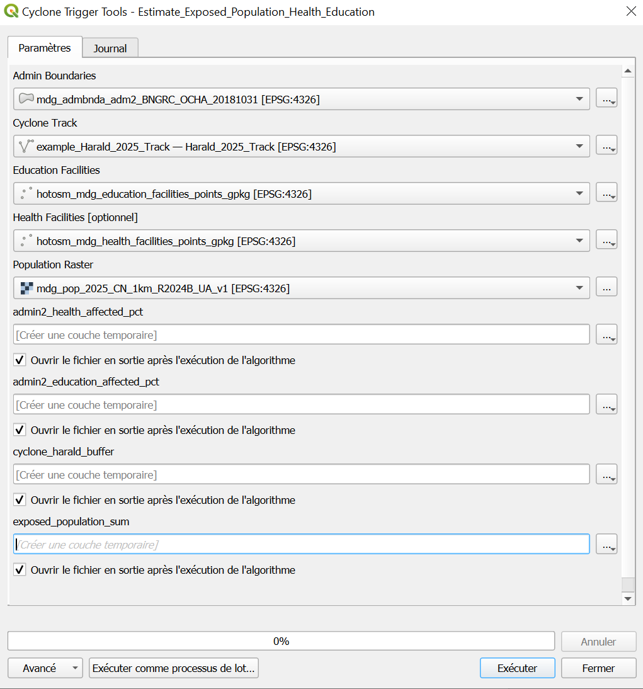
Configuration des paramètres pour exécuter le modèle de la tâche 3 avec toutes les couches d’entrée requises.#

Résultats du modèle de la tâche 3 affichés dans QGIS, y compris les pourcentages d’établissements de santé et d’éducation touchés par district.#
Task 4: Visualizing Cyclone Impact Results – Aina Styles Her Layers#
Aina now has all the analysis results she needs — but numbers and tables alone won’t convince her colleagues or decision-makers. What they need are clear and easy-to-read maps that can be used directly in meetings and reports.
To save time, Aina doesn’t want to adjust colors and legends manually each time a new cyclone comes in. Instead, she will use ready-made style files (.qml) that instantly give layers a professional and consistent look. Where no style exists yet, she will create one herself, so that next time the map can be updated with just a few clicks.
In this task, you will help Aina make her cyclone impact maps both informative and visually compelling by applying and creating QGIS style files.
1. Load Required Layers (if not already loaded)#
Make sure the following layers are already loaded into your QGIS project. These are outputs from Task 3:
example_Harald_2025_Trackcyclone_harald_bufferHarald_Exposed_Populationadmin2_health_affectedadmin2_education_affected
If any are missing:
Load them using drag & drop from your
resultsfolder, orUse
Layer→Add Layer→Add Vector LayerorAdd Raster Layer
2. Apply Predefined Style Files#
Apply the following.qml style files to the respective layers:
Layer |
Style File |
|---|---|
|
|
|
|
|
|
|
|
|
|
Note
⚠️ For the health and education facilities, the provided style files are linked to the column containing the sum of exposed facilities.
They are not based on the percentage column.
Steps:
Right-click on the layer in the Layers Panel
Select Properties
In the window that opens, go to the Symbology tab
At the bottom left, click Style → Load Style…
Click on the three points

Navigate to the corresponding
.qmlfile in the folderlayer_sytleand select itClick Open, then Apply and OK to confirm
💡 If the style doesn’t load correctly, double-check the column names and make sure the column name used in the
.qmlfile matches the one in your layer. To do this, open the Attribute Table of the layer and compare field names.
{kind=link}
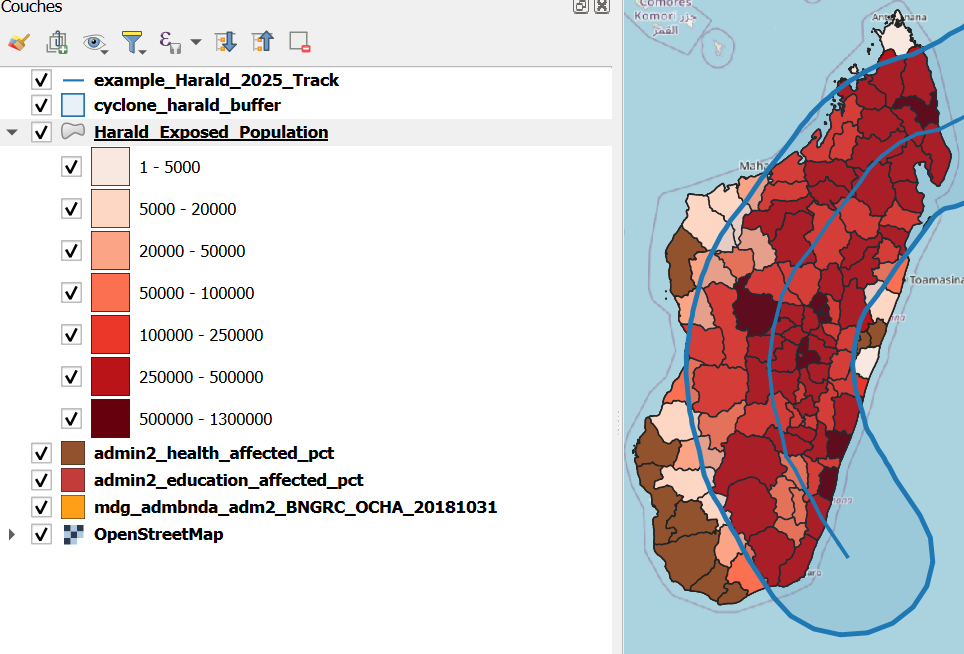
Carte montrant le nombre de personnes exposées par district après l’application du style .qml.#

Carte indiquant le nombre total d’établissements de santé exposés par district, représentés avec le style prédéfini.#

Carte affichant le nombre total d’établissements scolaires exposés par district, après application du fichier de style .qml.#
3. Style Percentage Layers Manually#
Aina also wants to visualise the percentage of exposed health and education facilities. However, since there is no prepared style available, she must complete the process manually.
Steps:
Right-click on the layer
admin2_health_affected→ select Duplicate LayerRename the duplicated layer to:
admin2_health_affected_percentageRight-click on the layer in the Layers Panel
Select Properties
In the window that opens, go to the Symbology tab
Set Symbology to
GraduatedChoose the correct field:
pct_health_affected
Open the Histogram tab to view the value distribution by clicking on
calculate histogramNext go back to
Classesand set the following configuration:Mode:
Equal IntervalClasses:
4
Click
OK.This will create four classes (0–25%,25–50%,50–75%,75–100%)Choose a color ramp (e.g., light yellow → dark red)
Optionally customize class labels for clarity
Click
Apply
Repeat the same process for the layer
admin2_education_affected. After duplicating the layer, rename the new one to:
admin2_health_affected_percentage
🧠 Why 4 equal classes?
This helps visualize severity across districts using simple and interpretable risk categories. However, you can experiment with Natural Breaks if data is unevenly distributed.
4. Save Your New Styles for Reuse#
Save your manually created styles as .qml files for future reuse.
Steps:
Right-click on the layer in the Layers Panel
Select Properties
In the window that opens, go to the Symbology tab
Click on
Style→Save Style…Save the file in the folder
layer_sytleUse these filenames:
health_pct_affected_styleeducation_pct_affected_style
5. (Optional) Import Styles into Your QGIS Library#
To reuse your styles in any future project:
Go to
Settings→Style ManagerClick
Import/Export→Import ItemsBrowse to and select your saved
.qmlfiles
The styles will now appear as presets in the Layer Styling Panel.
Task 5: Quick Map Creation – Aina Uses Map Templates#
After all the hard work of analyzing data and styling layers, Aina is ready to share her results. But creating a professional-looking map from scratch every time would be slow and repetitive.
To save time, she uses map templates (.qpt files) prepared by her team. These templates already contain the essential elements — map frames, legends, logos, titles, and scale bars. With them, Aina can turn her analysis into a clean, consistent map in just a few clicks.
✅ Goal
Apply a ready-made QGIS map template to quickly create and export maps that show cyclone impacts on population, health facilities, and schools.
Load the pre-made print layout template
Locate the template
cyclone_impact_population_map_template.qptin your project folder under:
Map_Templates/You can load the template by drag-and-drop:
Open your QGIS project.
Drag the
.qptfile directly into QGIS — a new layout will be created automatically.
Alternatively:
Go to
Project→New Print LayoutEnter a name (e.g.
Harald_2025_population)Click
OKIn the layout, go to
Layout→Import from Template…Select the file
cyclone_impact_overview_map_template.qptand clickOpen
Check and set page size
Right-click anywhere on the white canvas and choose
Page Properties.On the right-side panel, ensure the following:
Page Size: A3
Orientation: Landscape
Update the attribute table of exposed districts
In the Print Layout, click on the attribute table (right-hand side of the layout).
In the Item Properties panel:
Ensure the correct layer is selected
Harald_Exposed_populationClick
Refresh Table DataClick
Attributes…→ in the upper part under Fields click onClearThen add the following layer by clicking on ➕ :
Attribute:
ADM1_EN;ADM2_EN;ADM2_PCODE;exposed_population_sumTo sort the tabel content, under the Sorting clicking on ➕ and add the column
AMD1_ENSort Order: Ascending
Click
OK
⚠️ Warning – Long Tables
If the attribute table you want to include is longer than the map frame, part of it will be cut off in the exported map.
To fix this, open the table properties in the layout and reduce the font size until the full table fits.
Adjust the legend
In the layout, click on the Legend item.
In the Item Properties panel:
Uncheck Auto update
Scroll to Legend items and remove all entries (🗑️)
Add the following relevant layers:
example_Harald_2025_Trackcyclone_harald_bufferHarald_Exposed_Population
When selecting layers, check Only visible layers
Rename legend entries to match layout naming
example_Harald_2025_Track->
Cyclone Harald Track
cyclone_harald_buffer->
Cyclone Harald 200 km Buffer
Harald_Exposed_Population->
Number of exposed peopel
Update Logos and Icons
The logos that need to be added to the map are represented by the red X.
Click on the image in the Item List.
Click on the three dots
next to the file path.Browse to the folder
logos_picturesand select the correct logo file.
Review and update layout text elements
Make sure all text elements are up to date, especially:
Map title
Cyclone name and date
Author/Organization (optional)
Adjust font size or alignment if necessary
✅ Final Checklist#
Task |
Done |
|---|---|
Page set to A3 Landscape |
☐ |
Only relevant layer group active |
☐ |
Exposed districts attribute table updated |
☐ |
Legend cleaned and renamed |
☐ |
All text elements updated |
☐ |
Your final output should look like this after styling the layer
The map now clearly displays the exposed population within the affected districts The original storm track line — used as input data — is highlighted, as well as the buffered impact area, which serves as a proxy for identifying exposed districts.
On the right-hand side of the map, a list shows all exposed districts, including data on total population and exposed population. The districts (Admin 2) are organized under their corresponding regions (Admin 1).
{kind=link}
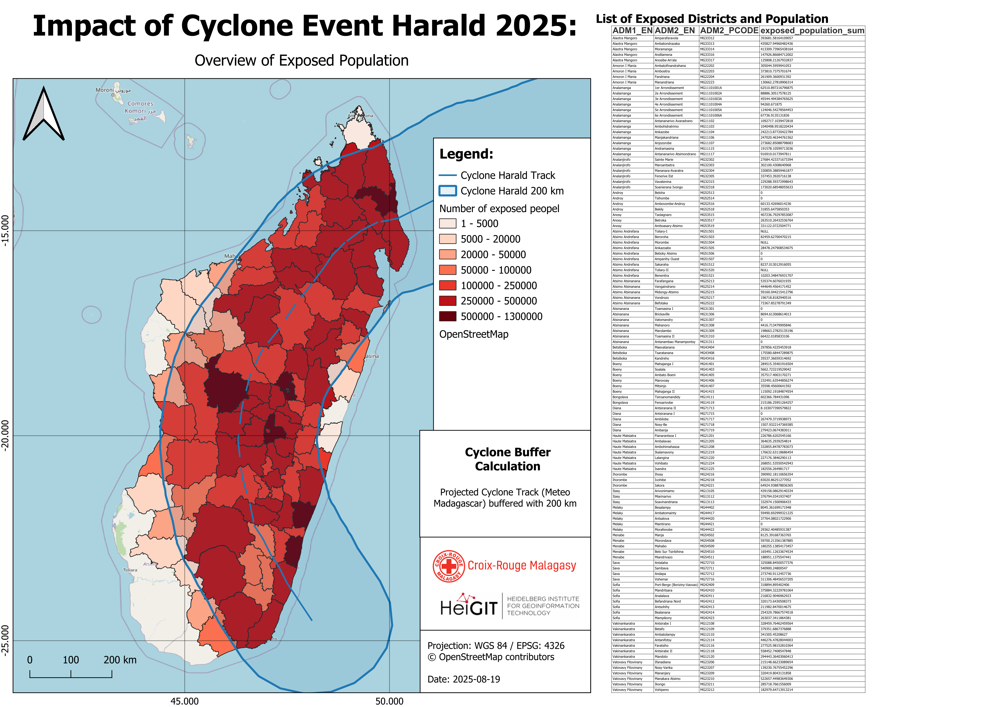
Task 6: Exporting Model Results for the Operations Team#
Background – Aina Supports Decision Makers
After producing maps and visuals, Aina often gets requests from the operations team:
“Can you send us the data in table format?”
Instead of exporting these tables manually each time, Aina wants to automate this step within her model — ensuring that every run of the model produces clear, ready-to-use data files.
In this task, you’ll help Aina extend her existing model to export selected layers.
We will join the following layers step by step:
admin2_health_affected_pct:
Contains the total number of health facilities, the number of affected health facilities, and the percentage of affected health facilities.admin2_education_affected_pct:
Contains the total number of education facilities, the number of affected education facilities, and the percentage of affected education facilities.exposed_population:
Contains the total population per district and the exposed population from the zonal statistics step.
Open your model
Open
Estimate_Exposed_Population_Health_EducationSave a new version as:
Estimate_Exposed_Population_Health_Education_Spreadsheet_Export
Join Health and Education data into one layer
In the Algorithms, search for
Join Attributes by Field Value.Add a description:
Joindre santé et éducation dans une seule couche par ADM2Configure the algorithm as follows:
Input Layer:
admin2_health_affected(select from Algorithm Output)Input Layer 2:
admin2_education_affected(select from Algorithm Output)Table field:
ADM2_PCODETable field 2:
ADM2_PCODELayer 2 fields to copy: Leave empty (all fields will be copied)
Join type: Take attributes of the first matching feature only (one-to-one)
Leave output as Model Output

Configuration de l’opération : joindre les données de santé et d’éducation par le champ ADM2_PCODE afin de combiner les résultats dans une seule couche.#
Join the result with the population data Now join the result of the previous step (health + education) to the exposed population data.
Add a second
Join Attributes by Field Valuealgorithm to the modelAdd a description:
Joindre les données de population avec les indicateurs santé et éducationConfigure the algorithm as follows:
Input Layer:
exposed_population(select from Algorithm Output of the Zonal Statistics step)Input Layer 2: Output from Step 2 (health + education)
Table field:
ADM2_PCODETable field 2:
ADM2_PCODELayer 2 fields to copy: (Enter the following field names exactly as shown — comma-separated, no spaces)
count_health_total;sum_exposed_health;pct_exposed_health;count_education_total;sum_exposed_education;pct_exposed_education
Join type: Take attributes of the first matching feature only (one-to-one)
Leave output as Model Output

Configuration de l’opération : joindre les données de population avec les indicateurs de santé et d’éducation.#
Tip
Where to find the column names
Open the attribute tables of the outputs health_total_per_admin2, sum_exposed_healthsites_POI, and admin2_health_affected_pct in QGIS.
Look at the column headers to find the exact names of the fields you want to copy.
Warning
Invisible spaces will break the join
If a column name like count_health_total has an invisible trailing space, the join will silently fail.
Always copy field names directly from the attribute table to avoid errors.
Export results to a spreadsheet
In the Processing Toolbox, search for
Export to spreadsheetand double-click to open.Add a description:
Exporter les données de population, d'éducation et de santé dans un seul tableauConfigure the tool as follows:
Input Layer: Select the output of Step 3 from Algorithm Output
Destination spreadsheet:
exposure_indicators_spreadsheetClick OK to add it to the model. Once you run the model, this step will automatically generate a spreadsheet with all relevant indicators ready for the operations team!

Exporter tous les indicateurs (population, santé, éducation) vers un tableau unique au format tableur.#
Validate and Save Your Extended Model
Click the ✔️ Validate Model button to check for errors.
Save again to:
Estimate_Exposed_Population_Health_Education.model3
Run the model
Click the ▶️ Run button in the top-right corner of the Graphical Modeler window.
Input:
Click on the three dots for each input dataset and select the correct input:
Cyclone Track→ select the GeoJSON of the storm path (e.g.Harald_2025_Track.geojson)Population Raster→ select the WorldPop raster fileAdmin Boundaries→ select the Admin 2 layer (e.g.MDG_adm2.gpkg)Health Facilities→ select the point dataset for health sitesEducation Facilities→ select the point dataset for schools
Output:
Save all output layers in the output folder and use the names below.
admin2_health_affacted->
admin2_health_affectedadmin2_education_affected->
admin2_education_affectedcyclone_harald_buffer->
cyclone_harald_bufferexposed_population_sum->
admin2_harald_Exposed_Populationexposure_indicators_spreadsheet->
exposure_indicators_harald
Click Run to execute the full model.
{kind=link}
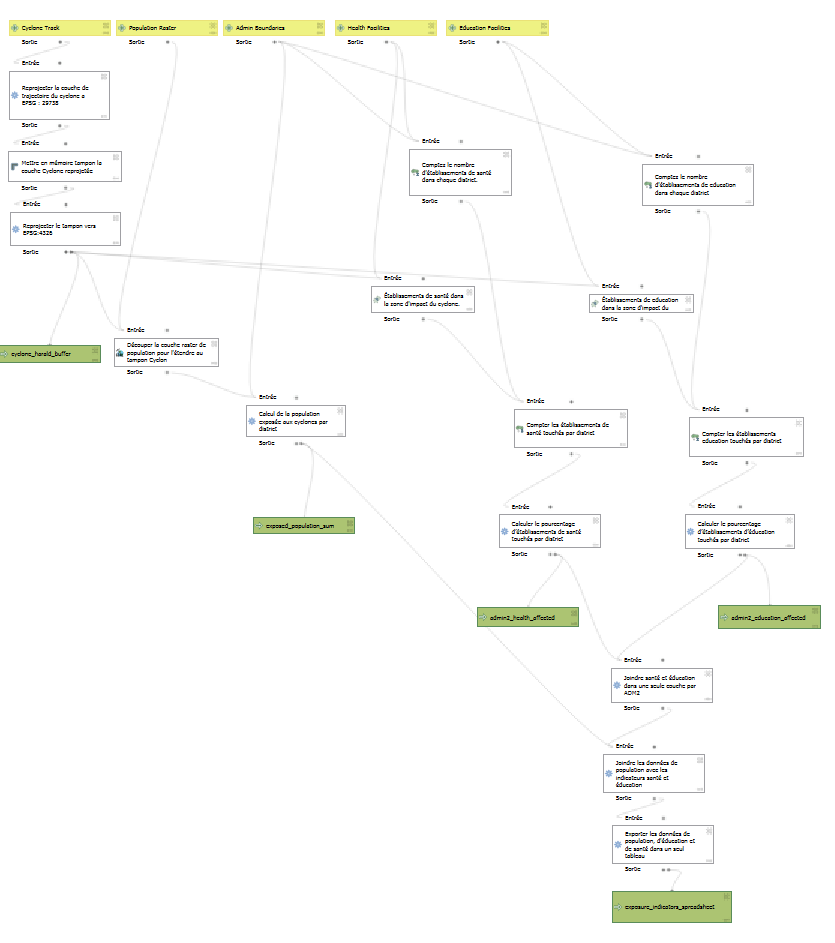
Vue du modeleur graphique avec l’étape d’exportation vers un tableau ajoutée au modèle.#

Fenêtre de configuration pour exécuter le modèle avec l’option d’export vers un tableau.#
{kind=link}
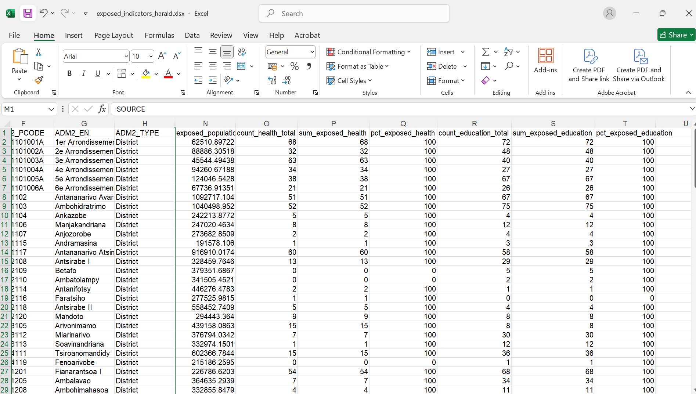
Résultats finaux du modèle exportés dans un tableau prêt à être utilisé.#
Task 7: Reachability of health Posts from CRM Warehouses#
Context:
When a cyclone is forecast to make landfall, Aina works with the logistics and health teams to decide where to send prepositioned medical kits. However, not all CRM warehouses stock the needed items — only three do.
To make fast, data-driven decisions, Aina wants to know which health posts are reachable from those warehouses within 10 hours. This analysis helps ensure that kits are sent to facilities that can actually be reached in time.
Her goal is to create a clear visual map showing reachable vs. non-reachable health posts — and share this with decision-makers as quickly as possible.
1. Filter Health Posts from the National Health Facility Dataset#
Before checking which facilities are reachable, Aina needs to isolate health posts from the broader dataset of all health facilities.
Load the health facilities dataset
File:
hotosm_mdg_health_facilities_points.gpkg(or the respective GeoPackage you are using)Load it via drag and drop or through
Layer→Add Vector Layer.
Open the attribute table and check the column named
amenity.Filter by expression to keep only health posts:
Right-click the layer →
Filter…Use the following expression:
"amenity" = 'health_post'
Export the filtered layer
Right-click the filtered layer in the Layers Panel →
Export→Save Features As…Format:
GeoPackageSave to your
projectfolder as:health_posts_only.gpkg
Click
OKto confirm export.
Remove the filter or original layer from your project to avoid confusion.
💡 Tip: Filtering directly in QGIS lets you work with a specific subset of features without modifying the original dataset.
2. Load Isochrone Layers for the Three CRM Warehouses#
Aina knows that only three warehouses stock the necessary medical supplies:
Antananarivo, Maroantsetra, and Tolanaro. She will now load the isochrone layers for each of these warehouses to begin analyzing service areas.
Load the individual isochrone layers for each warehouse:
CRM_warehouse_Isochrones_Antananarivo.gpkgCRM_warehouse_Isochrones_Maroantsetra.gpkgCRM_warehouse_Isochrones_Tolanaro.gpkg
You can drag and drop each file into QGIS or go to
Layer→Add Layer→Add Vector Layer.Inspect the attribute table of each isochrone layer
Confirm that each record has atraveltime_hfield showing the estimated travel time in hours.Remove all features where travel time is above 10 hours:
Right-click each layer →
Filter…Apply the expression:
"traveltime_h" <= 10
Export each filtered layer to the
tempfolder : At this point, Aina also ensures all exported layers are saved in the same CRS as the health post dataset —EPSG:4326— to avoid problems in the spatial join.Save each as:
CRM_isochrones_Antananarivo_upto10h.gpkg CRM_isochrones_Maroantsetra_upto10h.gpkg CRM_isochrones_Tolanaro_upto10h.gpkg
Style the isochrones for clarity Aina can apply predefined style file to color the layer based on
traveltime_hto visualize different time bands (4h, 6h, 8h, 10h) later in Step 5.Right-click each filtered layer →
Properties→SymbologyClick
Styleat the bottom →Load Style…Select the file:
CRM_warehouse_isochrones_style.qmlClick
Open, thenApplyandOK
3. Visualizing Health Post Reachability from CRM Warehouses#
Aina needs to identify which health posts can be reached by road from three key CRM warehouses (Antananarivo, Maroantsetra, and Tolanaro) within 10 hours of travel time. She will do this manually by combining the 10-hour isochrones from these warehouses and comparing them to the national health post dataset.
Merge the Isochrone Layers from the Three Warehouses
In the Processing Toolbox, search for
Merge Vector Layers.Input layers:
CRM_isochrones_Antananarivo_upto10h.gpkgCRM_isochrones_Maroantsetra_upto10h.gpkgCRM_isochrones_Tolanaro_upto10h.gpkg
CRS:
EPSG:4326Save to file:
merged_isochrones_10h.gpkg
Click Run.
Select Health Posts Reachable Within 10 Hours
In the Processing Toolbox, search for
Select by Location.Set the following parameters:
Input layer:
health_posts_only.gpkgPredicate:
intersectsIntersect layer:
merged_isochrones_10h.gpkg
Click Run.
💡 The selected points are those within the 10-hour service areas of the warehouses.
Create a Reachability Field for Selected Health Posts
Open the Field Calculator
 on the
on the health_posts_onlylayer.Check ✅
Only update selected featuresOutput field name:
Reachability_timeOutput field type:
Text (string)Expression:
'reachable in 10 hours'
Click OK to create and populate the new field for selected features.
Mark the Remaining Health Posts as Not Reachable
Invert the selection:
Go toEdit→Invert Feature Selection
or right-click the layer and selectInvert Selection.Open the Field Calculator again.
Check ✅
Only update selected featuresUse the same field:
Reachability_timeExpression:
'not reachable in 10 hours'
Click OK to apply the update.
✅ Now all health posts are labeled as either reachable or not reachable in the
Reachability_timecolumn.